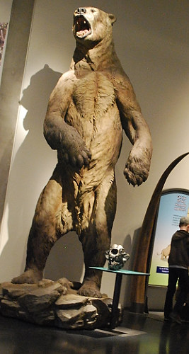

|

Close up of the bear.Giant short-faced bears belong to the Ursidae family, which also includes black bears, grizzly bears and polar bears. Arctodus simus was very large in size with a short body and long slender limbs. Arctodus simus had a short neck, a short broad snout and a low forehead. Giant short-faced bears lived during the middle and late Pleistocene (about 1.3 million to ~12,500 years ago), and were found in many different habitats in North America from the steppe-tundra to grasslands. |